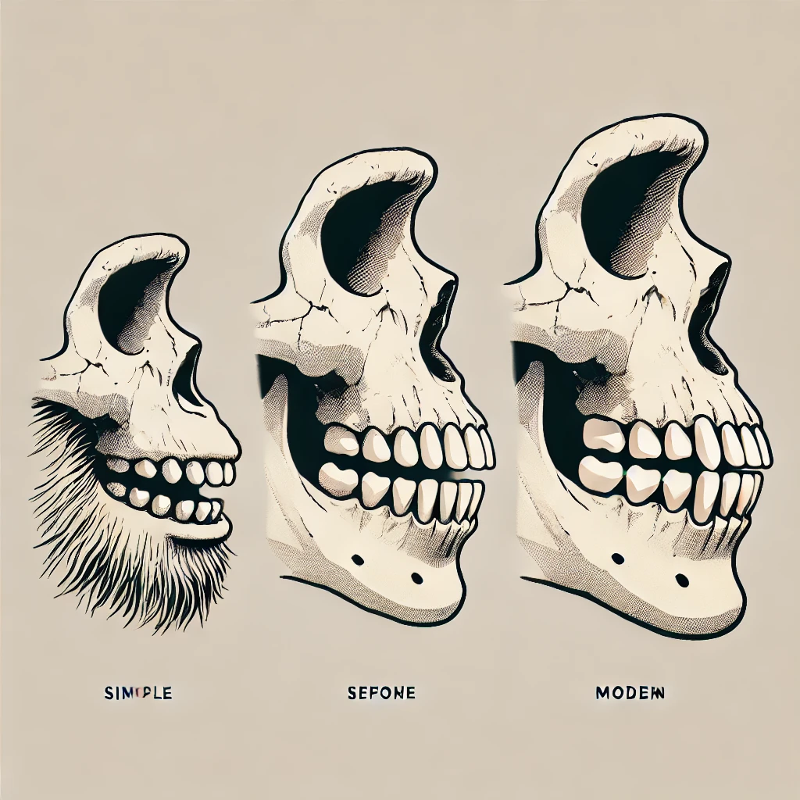

Dilbilim ve biyolojik evrim arasındaki ilişkinin derinliklerine inen yeni bir araştırma, tarımın yalnızca beslenme biçimlerimizi değil, konuşma yeteneğimizi de değiştirdiğini ortaya koyuyor. Çene yapısındaki evrimsel değişimler, bugün dünya dillerinde yaygın olarak kullanılan “f” ve “v” gibi labiodental seslerin ortaya çıkmasını sağlamış olabilir.
Tarımın Dili Şekillendiren Sessiz Gücü
İnsan çene yapısı, milyonlarca yıl boyunca katı ve lifli yiyecekleri tüketmeye adapte olmuş bir şekilde evrimleşmişti. Ancak, yaklaşık 8.000 yıl önce tarıma geçişle birlikte işlenmiş gıdalar yaygınlaştı. Bu durum, çene kemiklerinde daha az aşınmaya neden oldu ve yetişkinlerde çocukluk dönemine özgü olan hafif üst çene çıkıklığını (overbite) kalıcı hale getirdi. Yeni yapılan araştırmalar, bu değişimin konuşma yeteneğimiz üzerinde büyük bir etkiye sahip olduğunu gösteriyor.
Bilim insanları, üst dişlerin alt dişlerden hafifçe önde olması durumunda labiodental sesleri çıkarmanın %29 daha az enerji gerektirdiğini tespit etti. Bu, tarımsal topluluklarda “f” ve “v” seslerinin zamanla daha sık kullanılmasını açıklıyor. Gerçekten de, araştırmalar avcı-toplayıcı dillerin yalnızca dörtte biri kadar labiodental ses içerdiğini gösteriyor.
Dil Evriminde Yeni Bir Perspektif
Dilbilimci Balthasar Bickel liderliğindeki araştırma ekibi, bu değişimin tarihsel dil farklılıklarını nasıl şekillendirdiğini inceledi. Örneğin, Proto-Hint-Avrupa dilindeki patēr kelimesinin, İngilizce’de father olarak değişmesi, bu sürecin bir örneği olabilir. Benzer şekilde, Latincedeki bazı kelimelerin zamanla labiodental sesler kazandığı düşünülüyor.
Evrimin Bedeli: Konuşma Yetisi ile Gelen Çene Problemleri
Ancak bu evrimsel değişimin olumsuz bir yönü de var. Çene kemiğinin küçülmesi, dişlerin sıkışmasına ve bilhassa gömülü yirmilik dişlerin yaygınlaşmasına yol açtı. Araştırmacılara göre, insanoğlu yeni sesleri üretme kabiliyeti kazandı ama bu değişim, diş çürükleri ve ortodontik problemlerin artışı gibi sağlık sorunlarını da beraberinde getirdi.
Bu çalışma, dilin yalnızca kültürel bir fenomen olmadığını, aynı zamanda biyolojik evrimin bir ürünü olduğunu ortaya koyuyor. Kültürel değişimlerin biyolojik yapı üzerindeki etkisini gösteren bu araştırma, evrimsel biyoloji ile dilbilim arasındaki ilişkiye yeni bir ışık tutuyor.